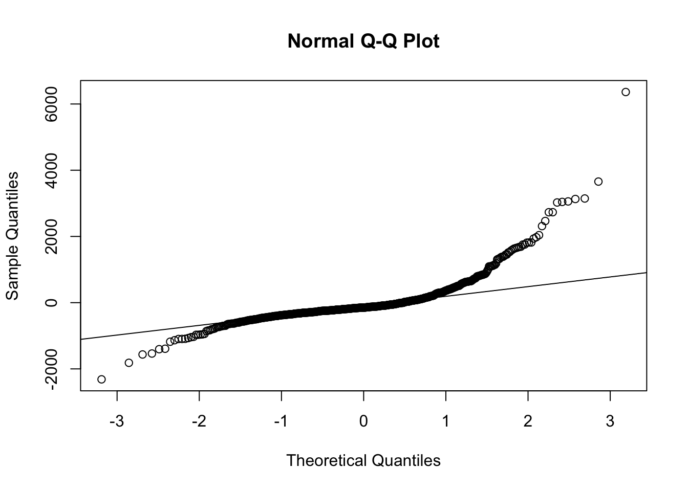

Chapter 26 Population sensation
Populations contain multitudes - numerous interacting individuals of the same species with slightly different genetic backgrounds, sharing genes, colonizing new areas, responding to environmental stimuli. Populations are hot-pots of evolution and essential for understanding species viability, especially when species are rare. Population-level studies have contributed fundamental ecological knowledge in evolution, range dynamics, and species conservation. Now that we are all jazzed about populations, let’s learn about how to describe them and their dynamics quantitative! May your knowledge acquisition be exponential!
26.1 Population characteristics
In population ecology, we commonly describe populations in terms of size and structure. Size is simply the number of individuals in a population and structure refers to the proportion of individuals across age or size classes. For rare species or species with low population sizes, population size can be directly estimated through a census. Just as it seems, a census is when each individual is counted. We often collect information pertinent to understanding demographic vital rates of individuals that are censused - just like we do in the U.S. census. For plants, rather than collect information on religious background or age as we would for populations of humans, we typically record the size of the plant and other salient characteristics derived from an understanding of the species’ breeding system, dispersal mechanism, life history, and ecology. When species are abundant, we use other methods to estimate population size, such as density (i.e., how many individuals occur within a particular area) or sub-sampling (i.e., collecting census data within a plot). If a species if cryptic, meaning hard to observe (as is the case for most animals), we use mark-recapture or occupancy modeling to estimate population size and structure.
26.2 Planning a census
Censuses are the ideal method for collecting demographic data, since it allows in-depth and comprehensive examination of the population (and it’s dynamics!). Let’s discuss some considerations for establishing a census protocol. When conducting a census, you want to plan on capturing critical life events and ensure that you are able to capture those life events through time (for multiple years). Let’s look at an example and establish a plan to census individuals within a population of this hypothetical species.
 The figure above shows a typical phenological pattern for an understory plant species in the eastern deciduous forest. These plants are dormant throughout the winter when temperatures are cold enough to freeze plant tissue. All plants, adults and new seedlings, emerge in the spring, and grow to their full size for the summer over a few week period in early spring. Then, they begin flowering and seed development in late summer, then disperse seeds into the fall.
The figure above shows a typical phenological pattern for an understory plant species in the eastern deciduous forest. These plants are dormant throughout the winter when temperatures are cold enough to freeze plant tissue. All plants, adults and new seedlings, emerge in the spring, and grow to their full size for the summer over a few week period in early spring. Then, they begin flowering and seed development in late summer, then disperse seeds into the fall.
The first census indicated in this figure takes place after emergence in the spring once plants have reached their final size for the growing season. The census is planned to occur as early as possible post-growth in order to assess recruitment (new seedlings that enter the population), since seedlings tend to start to die-off through time.
Seeds of this species require an 18-month stratification period prior to germination. In order to census across all members of the population, including seeds, we need to include the second census to quantify the number of seeds present at census 1, since counting seeds post-dispersal is almost impossible.
Note that we could capture individuals across all important classes, adult plants, seedlings and seeds, if we conducted a single census at time point 2. Why not conduct a single census? In this case, the researchers were interested in causes of mortality of plants, particularly new germinants, across the growing season. By conducting the census in the spring, they were able to identify all plants that emerged that year and note if those plants were lost during the growing season and in many cases ascribe a reason for the mortality of the plant.
26.3 Life cycle diagrams
In the above example, the census was timed to measure the performance and fate of important classes within the population. A useful tool for developing census protocols and demographic models is called a life cycle diagram. A life cycle diagram indicates important life stages and possible transitions among those stages. Continuing with our example above, we develop the following life history diagram.
 Here, you will note several important demographic characteristics of this species. First, on the right hand side of the diagram, you can see that the researchers have classified plants into several groups: new seedlings, >1 year old seedlings, juveniles, small adults and large adults. These categories were selected because individuals within the categories share similar rates of reproduction and survival (vital rates). On the left hand side of the diagram, you will see that this species forms a seedbank and that seeds within this seed back persist around 45 months.
Here, you will note several important demographic characteristics of this species. First, on the right hand side of the diagram, you can see that the researchers have classified plants into several groups: new seedlings, >1 year old seedlings, juveniles, small adults and large adults. These categories were selected because individuals within the categories share similar rates of reproduction and survival (vital rates). On the left hand side of the diagram, you will see that this species forms a seedbank and that seeds within this seed back persist around 45 months.
26.5 Integral projection models
Instead of binning individuals into stages, Integral Projection Models (IPMs) are built upon linear models that relate a state variable (usually a metric of size in plants) to important vital rates.
26.6 An example: Population ecology of an endangered plant
Pectis imberbis is an endangered plant species endemic to southern Arizona. In 2019, several researchers from NAU traveled to the largest population of P. imberbis in the state located on the Coronado National Memorial. They tagged, mapped and measured a sub-sample of this population in order to identify an appropriate state variable for P. imberbis. Using model selection tools (i.e., Aikaike Information Criterion (AIC)), the size metric that best explained variation in growth, survival and reproduction was selected. For P. imberbis, researchers explored a variety of state variables, including number of leaves, length of the longest leaf, stem number, height, and composite variables based on this metrics (like leaf number*number of leaves to estimate total plant foliage). In this case, height was the best predictor of performance and will serve as the state variable for demographic analyses.
First, let’s load a few important packages and set our working directory.
#Note that you have to go to the CRAN website to install IPMpack for the first time:
#install.packages("IPMpack", repos = "http://R-Forge.R-project.org", type = "source")
#devtools::install_github("CRAN/IPMpack")
#Load packages
#library(IPMpack)
library(fields)
library(car)
library(tidyverse)
library(grid)
library(gridExtra)
library(ggthemes)
#remember in your own work that is it really convenient to set up a working directory! Here is an example:
#setwd("/Users/sks379/Desktop/pectisanalyses/FinalPectisAnalyses") #laptop Once a state variable was identified, the team went back the next several years and collected demographic data on all plants. Let’s build our model for the first pair of transition years.
#read in data (it needs to be imported as a dataframe names pectisdata)
#pectisdata <- read.csv("/Users/sks379/Desktop/pectisanalyses/FinalPectisAnalyses/FinalTransitionMatrices/exampleIPMendangeredplant.csv", header=TRUE)
url <- "https://drive.google.com/uc?export=download&id=10vtDeB4yXtic7lLa8oTpCDQft10vtYDM"
pectisdata <- read.csv(url)
#exclude poor quality data
#pectisipm <- dplyr::filter(pectisdata, Exclude == "0")
#prepare the dataset
pectis <- as.data.frame(pectisdata)
pectis$size <- as.numeric(as.character(pectis$size))
pectis$sizeNext <- as.numeric(as.character(pectis$sizeNext))
head(pectis)## id size surv sizeNext fec1 fec2 Site DeerBrowse2020 BrowseLevel2020 Cover2020
## 1 1 69.3 0 NA 1 154.5 CNM N <NA> L
## 2 4 57.7 1 58.4 1 30.9 CNM Y L L
## 3 6 68.5 1 48.3 1 72.1 CNM N <NA> BG
## 4 7 101.6 1 57.4 1 257.5 CNM Y L L
## 5 8 57.9 1 68.0 1 370.8 CNM Y L BG
## 6 10 84.7 1 18.5 1 1339.0 CNM N <NA> BG
## ProtectedFRBrowse2020 Notes2020 Notes2021
## 1 N
## 2 N
## 3 N INSECT DAMAGE
## 4 N
## 5 N
## 6 NNotice the structure of the dataset! This dataframe tracks the fate of all individuals in the population from time 1 to time 2. The ‘id’ column corresponds with the tag number for each plant. The ‘size’ column contains sizes (in this case heights) of individuals in time 1, while ‘sizeNext’ indicates the size at time 2. In the ‘surv’ column, the fate of the individual at time 2 is indicated by either a 0 (died) or 1 (survived). For individuals that died, we place an ‘NA’ in the sizeNext column, since that individual didn’t exist that year!
Reproduction is always the most complex part of demographic modeling for plant species. Often, a reproductive cycle includes cryptic stages (seeds!) that are hard to track, may include vegetative and sexual reproductive components, and may involve several processes (like flower production and seed production) that may be important to examine to understand why population growth rates vary!
Pectis imberbis forms a seed bank with seeds remaining viable for at least 3 years (this was determined through a seed cage experiment). We do not include seed bank dynamics in this model, since seed dynamics are difficult to track across multiple sites and years, and manipulating seeds seems to affect their fate (germination, viability). For this reason, we have built the models such that seeds produced in year 1 has the potential to germinate in year 2 or perish. Luckily, ignoring the seed bank for species with high rates of seed production has negligible affects on population growth, and this pattern (higher rates of viability in the year following seed production) reflects the biology of this species. The ‘IPM package’ recognizes seedlings as seedlings based on the data structure. A new seedling won’t have a size, survival or reproductive values in year 1 (NAs are added to this column), but will have a measurement in the ‘sizeNext’ column.
We’ve broken reproduction into two components, fec1 and fec2. If an individual reproduced, we mark a ‘1’ in fec1, if the individual didn’t reproduce, then we add a ‘0’ to the fec1 column. For those individuals that did reproduce, the fec2 column contains the number of seeds produced. Again notice that if an individual didn’t reproduce, we place an ‘NA’ in the fec2 column. Finally, we’ve documented other observations for each individual that we think might explain population growth rates, like whether a plant has been browsed by deer or is in competition with other vegetation.
IPMs are only as good as the linear models that comprise them! As a critical first step in analyses, we have to take a look at the relationship between our state variable and growth, reproduction and survival. We want to be sure to address any issues with normality and unequal variance. First, examine variance; if variation depends on the state variable, include this in the model (we’ll do this in a minute). It is fairly common in plants to see, for instance, that growth rates are more variable in larger individuals.
#evaluating data for IPM construction
growth <- lm(sizeNext ~ size, na.action = na.omit, data=pectis)
resid <- residuals(growth)
shapiro.test(resid)##
## Shapiro-Wilk normality test
##
## data: resid
## W = 0.29287, p-value < 2.2e-16 This figure is showing a scatter plot of residuals on the y axis and fitted values (estimated responses) on the x axis. We use these scatterplots to detect non-linearity, unequal error variances, and outliers. The residuals should “bounce randomly” around the 0 line, indicating that the assumption that the relationship is linear is reasonable. You also show see that the residuals roughly form a “horizontal band” around the 0 line, indicating that the variances of the error terms are equal. Finally, we looking for a dataset in which no one residual “stands out” from the basic random pattern of residuals. Let’s look at these residuals another way and use label the outliers so that we can remove them if necessary!
id.n = length(pectis$id)
qqPlot(growth, distribution = "norm", id.method="y", id.cex = 0.6, id.n=id.n, id.col = "blue", id.location = "ab")
## [1] 551 628A quantile-quantile plot, often abbreviated as Q-Q plot, is a graphical tool used to assess whether a dataset follows a particular theoretical distribution, such as the normal distribution. It compares the quantiles of the observed data against the quantiles of the expected theoretical distribution.
Here’s how to interpret a Q-Q plot: The x-axis of the Q-Q plot represents the theoretical quantiles from a specified distribution (e.g., the normal distribution). The y-axis represents the quantiles of the observed data. If the points on the Q-Q plot fall approximately along a straight line, it suggests that the data follows the theoretical distribution. Deviations from the straight line indicate departures from the assumed distribution. If points are above the line, it suggests that the observed values are higher than expected for that quantile. If points are below the line, it suggests that the observed values are lower than expected for that quantile. The ends of the Q-Q plot are often of particular interest. Deviations in the tails can indicate differences in tail behavior.
Note to self: (In this example, there is no pattern to the residuals, so we don’t need to include size based variance models, but in final tutorial, maybe add a picture of size based variation (can grab pic from mee312146)).
Uh oh. Our slope is wonky and there are those darn outliers. From a brief once-over, the outliers maybe driving the slope issue that we are observing. It is good practice to try to determine whether it is legitimate to remove outliers from any statistical analysis. In demographic studies, there are so many plants and many reasonable possibilities for why we may observe a strange transition from one year to the next.
For example: 1) In the first year, someone measured the plant, but it had already been browsed by a deer and so was extra short, and then appears to grow like wild in the following year 2) Someone took data on the wrong space on the datasheet 3) Someone couldn’t find a mama plant, who actually died, so accidentally measured a baby that had germinated in a nearby spot
Given this, unlike with standard statistical analyses, we tend to be less stringent about when we remove outliers. Let’s take a look at those residuals.
## id size surv sizeNext fec1 fec2 Site DeerBrowse2020 BrowseLevel2020 Cover2020
## 161 191 71 1 47.3 1 154.5 CNM N <NA> PG
## ProtectedFRBrowse2020 Notes2020 Notes2021
## 161 N#or you can generate the id and use that to subset (just looking at the id number from above)
target_id <- 68
row_data_index <- pectis[pectis$ID == target_id, ]
print(row_data_index)## [1] id size surv sizeNext
## [5] fec1 fec2 Site DeerBrowse2020
## [9] BrowseLevel2020 Cover2020 ProtectedFRBrowse2020 Notes2020
## [13] Notes2021
## <0 rows> (or 0-length row.names)#check out the other outlier
row_index <- 84
value <- pectis[row_index,]
print(value) #note id number is 627## id size surv sizeNext fec1 fec2 Site DeerBrowse2020 BrowseLevel2020 Cover2020
## 84 106 30.2 1 38.7 1 30.9 CNM Y M PG
## ProtectedFRBrowse2020 Notes2020 Notes2021
## 84 YUnsurprisingly, there is no ready reason why individuals 161 and 84 would be acting strangely BUT they do behave in weird ways!!! (Did someone miss a decimal point?) AND I want to favor the the numerous individuals that conform to the model. Let’s remove those one or more outliers! I take a gentle hand with this removal of outliers and will start with just removing 161.
pectis <- pectis[-c(161),]
growth <- lm(sizeNext ~ size, na.action = na.omit, data=pectis)
par(mfrow=c(1,2),mar=c(4,4,2,1))
id.n = length(pectis$id)
plot(sizeNext ~ size, xlab="Height (cm) year 1", ylab="Height (cm) year 2", data=pectis)
qqPlot(growth, distribution = "norm", id.method="y", id.cex = 0.6, id.n=id.n, id.col = "blue", id.location = "ab")## 551 628
## 550 627 Uh oh. Still not normal. Let’s remove additional outliers.
Uh oh. Still not normal. Let’s remove additional outliers.
pectis <- pectis[-c(82, 84),]
growth <- lm(sizeNext ~ size, na.action = na.omit, data=pectis)
resid <- residuals(growth)
shapiro.test(resid)##
## Shapiro-Wilk normality test
##
## data: resid
## W = 0.29196, p-value < 2.2e-16par(mfrow=c(1,2),mar=c(4,4,2,1))
id.n = length(pectis$id)
plot(sizeNext ~ size, xlab="Height (cm) year 1", ylab="Height (cm) year 2", data=pectis)
qqPlot(growth, distribution = "norm", id.method="y", id.cex = 0.6, id.n=id.n, id.col = "blue", id.location = "ab")## 551 628
## 548 625
Yay! This is looking better now. While we are looking at size data, let’s take a look set a couple of parameters that we will need to build an IPM.
Set bounds for IPM============================ To integrate the kernel, we will need: 1) boundary points (the edges of the cells defining the matrix) 2) mesh points (the centers of the cells defining the matrix and the points at which the matrix is evaluated for the midpoint rule of numerical integration) 3) step size (the widths of the cells)
Boundary points==== Because size based predictions are generated from regressions, you can sometimes get projected sizes that are biologically dubious. For this reason, we create bounds on how big or small plants can become. To do this, I use the size based data from the population, and create a max and min limits that coorespond to the min/max +/- 1 standard deviation
## [1] 23## [1] 8.7## [1] 116.4## [1] 631## [1] 15.1035## [1] 8.7## [1] 646.1035nBigMatrix = 100 #dictates bin size
x<-seq(from=0,to=135,length=1001) #Seems fairly standard to create a matrix with these dimensions
x0<-data.frame(size=x,size2=x*x)Alrighty, now let’s explore relationships that will form the rest of the model! Let’s start with survival. We will use the DHARMa package to test for deviation from a binomial distribution and identify outliers.
#create a glm to predict survival
survival <- glm(surv ~ size, na.action = na.omit, family = "binomial", data=pectis)
# Install and load the DHARMa package
#install.packages("DHARMa", dependencies = TRUE)
library(DHARMa)
residuals <- residuals(survival, type = "response")
test <- testResiduals(survival)
#if you need to identify outliers
object1 <- simulateResiduals(fittedModel = survival)
outliers(object1, lowerQuantile = 0, upperQuantile = 1,
return = c("index", "logical"))## integer(0)#you can do this for flowering, but this year everything flowered so you will get an error
flowering <- glm(fec1 ~ size, na.action = na.omit, family = "binomial", data = pectis)
residuals <- residuals(flowering, type = "response")
#test <- testResiduals(flowering)Everything looks good with the survival (deviation and outlier tests are non-significant (n.s.))! Now, let’s look at seed production, which is count-based and conforms to a poisson distribution. The package below isn’t working - don’t worry about it at this time - it is unusual to do this anyway!
reproduction <- filter(pectis, fec1 == "1")
seeds <- glm(fec2 ~ size, na.action = na.omit, family = "poisson", data = reproduction)
residuals <- residuals(seeds, type = "response")
qqnorm(residuals)
qqline(residuals)

object2 <- simulateResiduals(fittedModel = seeds)
outliers(object2, lowerQuantile = 0, upperQuantile = 1,
return = c("index", "logical"))## [1] 1 2 3 4 6 7 8 9 10 11 13 14 15 16 17 18 19 20 21 22 23 24
## [23] 25 26 27 28 29 30 31 32 33 34 35 36 37 38 39 40 41 42 43 44 45 46
## [45] 47 48 49 50 51 52 53 54 55 56 57 58 59 60 61 62 63 64 65 68 69 70
## [67] 71 72 73 74 75 76 77 78 79 80 81 83 84 85 86 88 89 90 91 92 93 94
## [89] 95 96 97 98 99 100 101 102 103 104 105 106 107 108 109 110 111 113 114 115 116 117
## [111] 118 119 120 121 122 123 124 125 126 128 129 130 131 132 133 134 135 136 137 138 139 140
## [133] 141 142 143 144 145 146 147 148 149 150 151 152 153 154 155 156 157 158 159 160 161 162
## [155] 163 164 165 166 167 168 169 170 172 173 174 175 176 177 178 179 180 181 182 183 184 185
## [177] 186 187 188 189 190 191 192 193 194 195 197 198 199 200 202 203 204 205 206 207 208 209
## [199] 210 211 212 213 214 215 216 217 218 219 220 221 222 223 224 226 227 228 229 230 231 232
## [221] 233 234 235 236 237 239 240 241 242 243 244 245 246 247 249 250 251 252 253 254 255 256
## [243] 257 258 259 260 262 263 264 265 266 267 268 269 270 271 273 274 275 276 277 278 279 280
## [265] 281 282 283 284 285 286 287 288 289 290 292 293 294 295 296 297 298 299 300 301 302 303
## [287] 304 305 306 307 309 310 311 312 313 314 315 316 317 318 319 322 323 324 325 326 327 328
## [309] 331 332 333 335 336 337 338 339 340 342 343 344 345 346 347 348 349 350 351 352 353 354
## [331] 355 356 357 358 359 361 362 363 364 365 366 367 368 369 370 371 372 373 374 375 376 377
## [353] 378 379 381 382 383 384 385 386 387 388 389 390 391 392 393 394 395 397 398 399 400 402
## [375] 403 404 405 406 408 409 410 411 413 414 415 417 418 419 420 421 422 423 425 426 428 429
## [397] 430 432 433 434 436 437 438 439 440 441 442 443 444 445 447 448 449 450 451 452 453 455
## [419] 456 457 458 459 460 461 462 463 464 465 466 467 468 469 470 471 472 473 474 475 476 477
## [441] 478 480 481 482 483 484 485 486 487 488 490 491 492 493 494 495 496 497 498 499 500 501
## [463] 502 503 504 505 506 507 508 509 510 511 512 513 514 515 516 517 518 519 520 521 522 523
## [485] 524 525 526 527 528 529 531 532 534 535 536 537 538 539 540 541 542 543 545 546 547 548
## [507] 549 550 551 552 553 554 555 556 557 558 559 560 561 562 563 564 565 567 568 569 570 572
## [529] 573 574 575 576 577 578 579 580 581 582 583 584 585 586 588 589 590 591 592 593 594 595
## [551] 596 597 598 599 600 601 602 603 604 606 607 608 609 610 611 612 614 615 616 617 618 619
## [573] 621 622 623 624 625 626 627 629 630 632 633 634 635 637 638 639 640 641 642 643 644 646
## [595] 647 648 649 650 651 652 653 655 656 658 659 660 661 662 664 665 666 667 669 670 671 672
## [617] 673 674 675 676 677 678 679 680 682 684 686 687 688 689 690 691 692 693 694 695 696 697
## [639] 698 699 700Let’s take a comprehensive look at our different regressions that will be used to build the IPM.
#explore different regression models for relating growth, survival and reproduction to state variable
#=============================================
#explore vital rate data
par(mfrow=c(3,2),mar=c(4,4,2,1))
plot(pectis$size,jitter(pectis$surv),xlab="Size (t)", ylab="Survival to t+1")
plot(pectis$size,pectis$sizeNext,xlab="Size (t)",ylab="Size (t+1)")
plot(pectis$size,jitter(pectis$fec1),xlab="Size (t)", ylab="Flowering probability")
plot(pectis$size,pectis$fec2,xlab="Size (t)",ylab="Flower Head Number")
hist(pectis$sizeNext[is.na(pectis$size)], xlab="Recruit Size", main="") All of these relationships look good. While we will retain the same state variable across all years, the nature of the relationship may change annually. For this reason, each year that we build a model, we will need to run model comparisons and select the most appropriate model. Let’s start with growth!
All of these relationships look good. While we will retain the same state variable across all years, the nature of the relationship may change annually. For this reason, each year that we build a model, we will need to run model comparisons and select the most appropriate model. Let’s start with growth!
#install.packages("IPMpack", repos = "http://R-Forge.R-project.org", type = "source")
#devtools::install_github("CRAN/IPMpack")
#see https://levisc8.github.io/ipmr/articles/ipmr-introduction.html
#Load packages
library(IPMpack)
#growth model constuction
growthModelComp(dataf = pectis, makePlot = TRUE, legendPos = "bottomright", mainTitle = "Growth")
## $summaryTable
## Exp. Vars Reg. Type AIC
## 1 sizeNext ~ 1 constantVar 5927.06461395333
## 2 sizeNext ~ size constantVar 5920.14756906622
## 3 sizeNext ~ size + size2 constantVar 5921.98357878777
##
## $growthObjects
## $growthObjects[[1]]
## An object of class "growthObj"
## Slot "fit":
##
## Call:
## lm(formula = Formula, data = dataf)
##
## Coefficients:
## (Intercept)
## 60.6
##
##
## Slot "sd":
## [1] 37.60413
##
##
## $growthObjects[[2]]
## An object of class "growthObj"
## Slot "fit":
##
## Call:
## lm(formula = Formula, data = dataf)
##
## Coefficients:
## (Intercept) size
## 39.8024 0.3132
##
##
## Slot "sd":
## [1] 37.35147
##
##
## $growthObjects[[3]]
## An object of class "growthObj"
## Slot "fit":
##
## Call:
## lm(formula = Formula, data = dataf)
##
## Coefficients:
## (Intercept) size size2
## 32.075502 0.556869 -0.001828
##
##
## Slot "sd":
## [1] 37.37822This handy piece of code quickly compares different model fits, the slope, a linear fit, and a polynomial fit. Since the lowest AIC value indicates the model-of-best-fit, then we will choose the 2nd order polynomial model. Now, let’s build our growth model! We also know from our previous analyses that the variation was equal, so we select ‘constantVar’. Finally size is continuous, so we select ‘gaussian’.
#select best model - model with lowest values
#go <-makeGrowthObj(dataf = pectis, Formula = sizeNext~size + size2, regType = "constantVar", Family="gaussian")Let’s compare survival models now!
#pectis_clean <- na.omit(pectis_surv)
#survModelComp(dataf = pectis_clean, makePlot = TRUE, legendPos = "bottomright", mainTitle = "Survival")
#survModelComp(dataf = pectis, makePlot = TRUE, legendPos = "bottomright", mainTitle = "Survival")Here, the model of best fit is the first order model. Let’s build the survival object.
#select best model - model with lowest values
#so <- makeSurvObj(dataf = pectis_clean, Formula = surv~size+size2)The process for creating fecundity objects is not quite as streamlined, so let’s develop our own code to compare fecundity models. For P. imberbis, we break reproduction into two components: 1) whether a plant reproduces, and 2) if a plant reproduces, how many seeds are produced as a function of size.
We will select the linear model. Now let’s look at seed production.
Now let’s build the fecundity kernel. I will explain all of this later - all you need to do is change the formula structure following the ‘fo <-’ code to reflect the models of best fit.